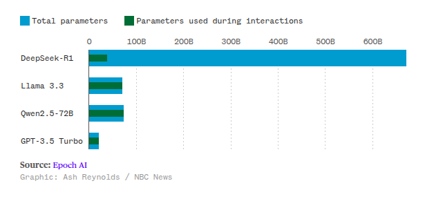
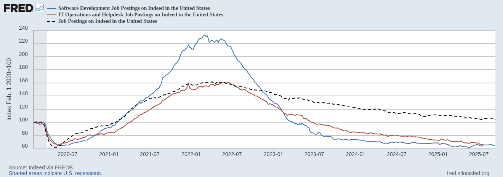

Links
(presentation starts in next few slides)
Playing the long game
🤖 In the age of LLMs 🤖
Things are pretty weird right now
- "AI" and LLMs are ubiquitous
- Signal to noise ratio = terrible (hype + naysayers)
- Emerging best practices
- Emerging footguns
- Economically concerning
- Environmentally concerning
What will things look like in 5 years?
How should we adapt?
Hi, I'm Sheena
- Electrical engineer
- Software eng and lead
-
Spent the last 6 years in tech education
- Software + "Soft" skills
- Science of ed => engineering
of ed
- Founded Prelude.Tech
- Founded Guild of Educators
- PyCon Africa 2025 Chair
- PSF Board member
🧗♀️🏕️🧭🇿🇦🖊️🛠️🔥🐕🎸👩🏻💻 🧑🏫
LLMs and education
- Preparing people for the future is my whole focus
- Lots of people ask me for career advice
😨
What are we doing here?
- My latest thinking
- Not the final word
Likely futures
- Super-intelligence explosion
- The bubble bursts
- AI capabilities stabilize
Part 1
Looking back to look forward
A brief history of LLMs
- 2018: GPT 1
- 2019: GPT 2 (post-training/fine tuning)
- 2020: GPT 3
- 2020: RAG
- 2021: Anthropic
- 2021: Codex + Github Copilot
- December 2022: ChatGPT
Scaling "laws"
- More data => More intelligence
- More parameters => More intelligence
- More money => More intelligence
New capabilities emerged with scale
- Capabilities that seem to appear suddenly at certain scales
- Mathematical reasoning at 100 Billion parameters
- In-context learning (the ability to learn from examples within a single conversation) appeared suddenly
- But some abilities showed "inverse scaling"—they actually got worse as models got larger
2022: Deepmind Chinchilla paper
- Chinchilla = 70-billion-parameter model on 1.4 trillion tokens
- GPT-3 = 175 billion parameters
- Gopher = 280 billion parameters
- Chinchilla out-performed these while MUCH smaller
- Estimates suggested the internet contained about 500 trillion tokens of unique text
Not all tokens are created equal
- Quality data is hard to find
- Low hanging fruit has been picked
2023
- OpenAI Plugin ecosystem + functions
- GPT-4 was amazing
- Microsoft research paper titled “Sparks of Artificial General Intelligence.”
- Venture-capital spending on A.I. jumped by eighty per cent in following year
- OpenAI's launches "Superalignment" project (Ilya Sutskever)
Post training
- Alignment - helpful, truthful, harmless
- Task/domain customization
- Open AI post-training since GPT-2
- Where do post-training datasets come from?
2024: Plot twist 🍓
- Open AI releases o1. A reasoning model.
- != GTP4 + 💸💸💸
- != GPT5
- Iterative, chain-of-thought reasoning
- Come up with multiple answers, evaluate, return best one (scale up thinking time)
- December: o3 released
Late 2024: MCP
Open standard for connecting any AI assistant (LLM) to any external tool or data source in a plug-and-play way
2024: New age of discovery
"The 2010s were the age of scaling, now we're back in the age of wonder and discovery once again. Everyone is looking for the next thing"
- Ilya Sutskever
OpenAI co-founder | Safe Superintelligence Inc co founder
Deepseek mixture of experts

Not just scale
- 2024: o1, o3 => different model architectures
- Jan 2025: R1 => new architecture
Feb 2025
"The intelligence of an AI model roughly equals the log of the resources used to train and run it. These resources are chiefly training compute, data, and inference compute. It appears that you can spend arbitrary amounts of money and get continuous and predictable gains; the scaling laws that predict this are accurate over many orders of magnitude."
- Sam Altman
Deepseek economic effect
- NVIDIA dropped 17% in one day
- $593 billion
- Biggest single day loss in US market history
- Previous record holder ... NVIDIA!
2025: January. Stargate announced
- $500 Billion AI infrastructure company
- 1 GW could power approximately 876,000 American households
- 15-20 Gw total. A small nation
- Plans to expand to other countries. Stargate Norway announced in July
- Commitment to clean energy. Requires production, transmission and storage innovations
XAI Colossus cluster
- Hosting 100,000 H100s
- Plans to expand this to at least 1 million
2025 July. GPT 5
- Generally underwhelming
- Required different prompting strategy (leak)
- Under the hood: router that selects between multiple models
- In many cases, performance comparable with 03
Part 2
Looking to the future
Likely futures
- Super-intelligence explosion
- The bubble bursts
- AI capabilities stabilize
Timeline 1:
Super-intelligence explosion
- Current trajectory => AGI
- Assumes scaling laws hold
- 💸💸💸 => AGI
- Different model architectures yield different results - have we landed on an architecture that is capable of AGI?
Are scaling laws really "laws"
- No answer about why scaling works. Foundational theory missing
- Hardware costs are massive
- Physical resource limitations
- Hard limits in data for pre-training (510B tokens. Not same quality)
-
largest known dataset is ~18T tokens (Qwen2.5)
- Post training data requires value judgments
What are the chances of AGI? Really?
- No compelling evidence, only inference
- Winner takes all
- Clear that techniques and architectures are not in optimal state
"I’ve seen the story happen for enough times to really believe that probably the scaling is going to continue, and that there’s some magic to it that we haven’t really explained on a theoretical basis yet."
-
Dario Amodei of Anthropic
"There is no wall"
- Sam Altman
Timeline 2: The bubble bursts
Investment versus profit
- 2024
- Anthropic lost $5.3 billion
2025: OpenAI’s annual recurring revenue is now on track to pass $20 billion this year, still losing money
Volatility in market
- January 2025, NVIDIA set the record for most money lost in a day (~ $600 Billion)
- They held the previous record
Magnificent 7
~ 35% of US stock market
- NVIDIA
- Microsoft
- Apple
- Alphabet(Google)
- Amazon
- Meta
- Tesla
Going deeper
- NVIDIA makes up 19% of magnificent 7 market value
- 42.4% of NVIDIA revenue = Microsoft, Amazon, Meta, Alphabet, Tesla
- Companies like Coreweave and Crusoa ~ 10% Nvidia revenue
- Meta spends 25% of capital expendatures on NVIDIA chips
- Microsoft spends 47% of capital expendatures on NVIDIA chips
What happens if the bubble bursts?
- Can't use big financial hammers to make LLMs more powerful any more
- Existing infrastructure wont go away
- Core capabilities stabilize
- Tools become more expensive? Maybe
Reverse brain drain
- ML experts and academics working in "closed" companies (big paychecks)
- Talent released to the market
- Talent available to other orgs
- Talent fed back to academia => open research
Timeline 3: LLM capabilities stabilize
Comparisons
- Seems more likely than a super-intelligence explosion
- If the bubble bursts, this will happen
- So plan for this one!
But aren't there new AI tools like every 5 minutes?
- Post-training makes existing models good at different things
- LLMs are components of these tools, not whole new models
Job market crash

US Job postings on Indeed
What happened?
- Recession => layoffs
- Covid => level up remote products/services
- Zero interest rates => Free money
- Flood of new talent
- Company right-sizing => low open positions
- Hesitance to make that mistake again
- Emphasis on effective teams rather than big teams
What's happening?
- Natural attrition => job openings
- Vibe code => new opportunities
- Vibe code cleanup specialist
- More entrepreneurs
- New jobs: AI-security, observability, ops...
Predictions
- Model capabilities will not make major jumps. Might get a faster car, but not a rocket-ship
- Explosion of model applications will continue
- Serious problems (eg medical) will be owned by big players
Part 3
Adapting to a likely future
Different strokes
- Early-career devs
- Established developers and engineers
- Organizations
Early career developers
- Opportunities are scarce right now
- Some jobs automated
- Talent pool = huge and experienced
- A lot of people dropping out of tech entirely
- Unsure of what skills to build
- Hard to get noticed
- LLMs can help or harm
Don't give up
- There is likely to be a talent vacuum
- Get good!
- Get noticed!
Anti-patterns
- Tutorial hell
- Shallow knowledge of many tools
- Portfolio of tiny projects
- Chasing certificates
Build fundamental skills
- Code literacy is necessary
- Use katas to build problem solving skills
- Read about best practices
Go deep by building big
- Build + demonstrate mental discipline, grit, attention to detail
- Steer clear of golden pathways
- Use LLMs to write code but you will hit a wall
- When you get stuck - that is a trigger to learn more
- Simple architecture
- One COMPLETE feature at a time -> understand iteratively
- Be your own vibe-code cleanup specialist
Get noticed
- Avoid CV-padding, CV spam, sloppy cover letters
- Build a reputation by showing up and adding value
- Human interactions and relationships
Established devs and engineers
- LLMs give a productivity boost in many (not all) situations
- Be aware of your blast radius
- Validation and testing
- Observability
- Use tools that keep context simple and consistent
- Use tools with guardrails built in
Organizations
- Don't be fooled by greenfield POCs
- Ask your most capable and experienced engineers to find ways to use the tools safely
- Favor deterministic systems
Future talent
- Build a grad program/internship program
- Avoid the CV arms race
- Focus on relationships and community
- "Recruiter" doesn't need to be a dirty word
Nurturing the dev ecosystem and talent pool
- Invest in the ecosystem
- Not a zero sum game
- Build a good reputation
- More talent, partners, clients, ideas, opportunities
More...
- Talent
- Partners
- Clients
- Innovation
- Opportunities
Thank you